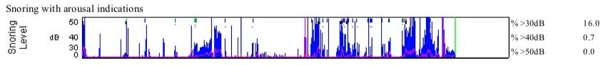
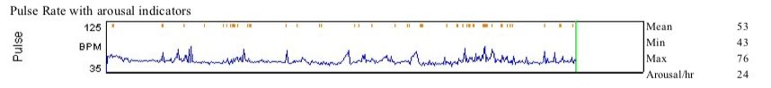
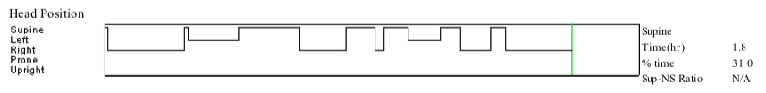
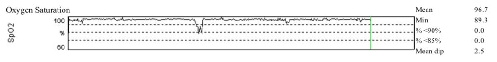
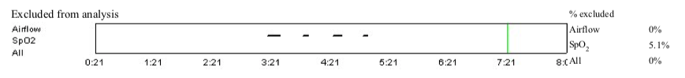

--------点击蓝字关注我--------
--------点击蓝字关注我--------
最近真的事情好多好多，有一点疲于奔命的感觉，所以这次的文章继续划水啦。（nba决赛还真的蛮好看的，rance10真好玩）。
今天来写写最近去找医生测的这个好玩的东西吧，一个叫睡眠测试的东西。
起因是这样的，我是一个开车经常开着开着就会睡着的人，就算睡得精神极其饱满，要是让我连续开3个小时以上的车，我开车的时候就会忍不住要睡着，必须靠边停车睡一会儿。
这个事情让我相当烦恼。不仅仅是开车，平时工作的时候，要是工作时间长一点，我也会犯困。因此我经常怀疑自己睡眠质量不好。但问题是我自己明明每天一关灯就能睡着，至少能睡满7个小时啊。
有一次我无意中在yelp上面搜索的时候，发现居然还有睡眠相关的诊所，专门诊断睡觉相关的问题，于是我就预约了一下，去找医生看了一下。
医生问了我一点初步的问题，然后觉得有必要做个检测。
检测分两种，一种是医生给你一个可穿戴式设备，让你在家睡觉的时候戴着监测睡眠。另外一种是你可以去专门的检测室睡觉，然后可以进行更加全面的检测，不过价格更贵。
我选择的自己带可穿戴式设备回家，毕竟去专门的检测室太贵了。
这个可穿戴式设备是一个类似于VR眼睛的东西，好多不同的东西，分别连接在身体不同的地方。绑在身上的部分有点像背背佳，用来检测呼吸的相关信息，然后有两个检测的贴片黏在在头顶，可能是检测心率的。还有两根管子挂在鼻孔口，用来检测呼吸的含氧量。
说实话戴着睡觉的时候真心不太舒服。监测一共要持续两个晚上，这两个晚上我都没怎么睡好，睡了6个多小时就醒了，睡梦中迷迷糊糊地就把这个设备扯下来了。
两个晚上结束以后，我就找了个时间把设备还回医生那边了，过了几天医生来了个电话，说结果出来了，一切都很正常，睡眠没有任何问题，然后发给我一个报告，然后大致给我解释了一下。感觉这个医生说得蛮模糊的，我拿到报告以后，觉得自己看报告比她解释的事情多多了。
下面是一些报告里的数据，我自己觉得这些蛮有意思的，随便贴一点出来。

如上图所示，我有16%的时间打呼，打呼的音高为约30分贝，基本就跟说悄悄话的声音差不多。

我睡觉的时候平均的心率是53。然后我平均每小时会醒24次（根据心率来算的唤醒，肯定不是我自己能意识到的）。这居然属于正常的，似乎大部分人都是这样。

我有31%的时间是仰卧着睡的，然后右侧卧的时间比左侧卧的时间两倍还多一点。

我睡觉的时候含氧量平均为96.7%，还是蛮高的，中间那个低下去的地方是我把管子拔了。这个仪器还蛮厉害的，会自动把这部分的数据标出来，在计算的时候截掉，如下图所示。

嘛，基本就是这样了。要是你也怀疑自己睡眠有问题，特别是如果打呼声音很大的话，也可以去做一下检测，说不定可以让你白天精神更加充沛哦。